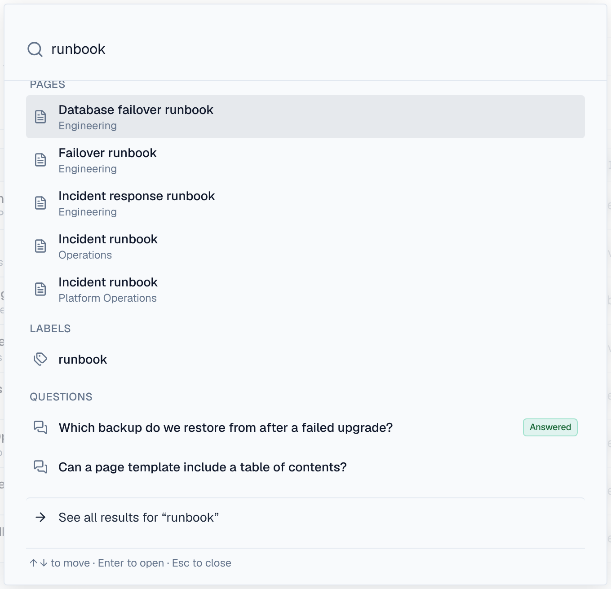
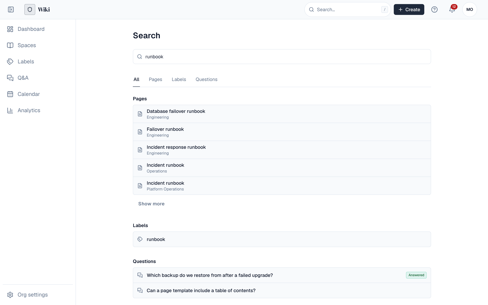

1. Overview
The search box at the top of every screen finds what you can open across the Wiki: spaces, pages, labels and questions, and for administrators settings, people and groups. Open it by clicking the box, with Ctrl+K (⌘K on a Mac), or with / when you aren't typing in a field. On a phone, tap the search button in the header; the search fills the screen.

Results appear as you type, grouped by kind, with the first one highlighted. A page shows the space it is in; a question shows Answered when it has an accepted answer.
2. All results
The box shows the first five results of each kind. See all results at the bottom (or Enter on it) opens the Search page: every kind under All, each with Show more when there are more, and a tab per kind that found something. A kind's tab lists its results 20 at a time with Load more. The address holds the words and the tab (/search?q=failover&kind=pages), so a search can be bookmarked or shared; others see only what they may open.

3. What it finds
Only what you could open yourself is found: a space you can't see never appears, nor do its pages, even by name. Drafts, archived pages and pages in the trash aren't found.
| Kind | Matches | Opens |
|---|---|---|
| Spaces | Name and key | The space's overview |
| Pages | Words of the page's title (published pages only) | The page |
| Labels | Labels that start with what you typed, on pages you can read | The label's list of pages |
| Questions | Title and text of a question | The question in Q&A |
| Settings | A setting's label, tab or page | For people who can open Settings |
| People and groups | Name, username, email | For administrators who may see them |
Pages are found by their title, not yet by the words in their content. To find a page by its subject, give it a clear title and labels.
While anonymous access is on, visitors who aren't signed in find public spaces and their published pages.
4. How matching works
Each word you type must start a word of the result: fail run finds Payments failover runbook, and so does run, but book doesn't. Dots, dashes, underscores and @ separate words. Type at least two letters or digits. Case and order don't matter.
5. Using the keyboard
- ↑ and ↓ move through the results, Enter opens the highlighted one, Esc closes the search.
- With the box empty, your last five searches are offered. They are kept in this browser only; Clear forgets them.
- Ctrl+K opens the search even while you are typing in a page.
6. Searching through the API
GET /api/search takes the same words in q and answers with the kinds your API token allows; it never finds more than its owner could. Add kind (spaces, pages, labels or questions) for one kind, 20 a page, and pass each group's next back as cursor for the next page.
curl -H "Authorization: Bearer $WIKI_TOKEN" "https://wiki.example.com/api/search?q=failover&kind=pages"